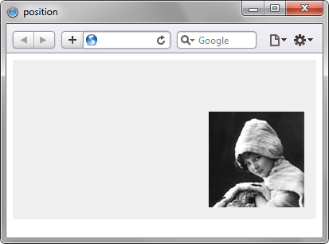

position
Устанавливает способ позиционирования элемента относительно окна браузера или других объектов на веб-странице.
Краткая информация
| Значение по умолчанию | static |
|---|---|
| Наследуется | Нет |
| Применяется | Ко всем элементам |
Синтаксис
position: absolute | fixed | relative | staticЗначения
- absolute
- Указывает, что элемент абсолютно позиционирован, при этом другие элементы отображаются на веб-странице словно абсолютно позиционированного элемента и нет. Положение элемента задается свойствами left, top, right и bottom, также на положение влияет значение свойства position родительского элемента. Так, если у родителя значение position установлено как static или родителя нет, то отсчет координат ведется от края окна браузера. Если у родителя значение position задано как fixed, relative или absolute, то отсчет координат ведется от края родительского элемента.
- fixed
- По своему действию это значение близко к absolute, но в отличие от него привязывается к указанной свойствами left, top, right и bottom точке на экране и не меняет своего положения при прокрутке веб-страницы. Браузер Firefox вообще не отображает полосы прокрутки, если положение элемента задано фиксированным, и оно не помещается целиком в окно браузера. В браузере Opera хотя и показываются полосы прокрутки, но они никак не влияют на позицию элемента.
- relative
- Положение элемента устанавливается относительно его исходного места. Добавление свойств left, top, right и bottom изменяет позицию элемента и сдвигает его в ту или иную сторону от первоначального расположения.
- static
- Элементы отображаются как обычно. Использование свойств left, top, right и bottom не приводит к каким-либо результатам.
Пример
<!DOCTYPE html>
<html>
<head>
<meta charset="utf-8">
<title>position</title>
<style>
.layer1 {
position: relative; /* Относительное позиционирование */
background: #f0f0f0; /* Цвет фона */
height: 200px; /* Высота блока */
}
.layer2 {
position: absolute; /* Абсолютное позиционирование */
bottom: 15px; /* Положение от нижнего края */
right: 15px; /* Положение от правого края */
line-height: 1px;
}
</style>
</head>
<body>
<div class="layer1">
<div class="layer2">
<img src="images/girl.jpg" alt="Девочка" />
</div>
</div>
</body>
</html>Результат данного примера показан на рис. 1.

Рис. 1. Применение свойства position
Объектная модель
Объект.style.position
Примечание
Браузер Internet Explorer до версии 7 значение fixed не поддерживает.
Спецификация
| Спецификация | Статус |
|---|---|
| CSS Level 2 (Revision 1) | Рекомендация |
| CSS Positioned Layout Module Level 3 | Рабочий проект |
Браузеры
| Internet Explorer | Chrome | Opera | Safari | Firefox | |
| 4 | 7 | 1 | 4 | 1 | 1 |
| Android | Firefox Mobile | Opera Mobile | Safari Mobile |
| 1 | 1 | 6 | 1 |